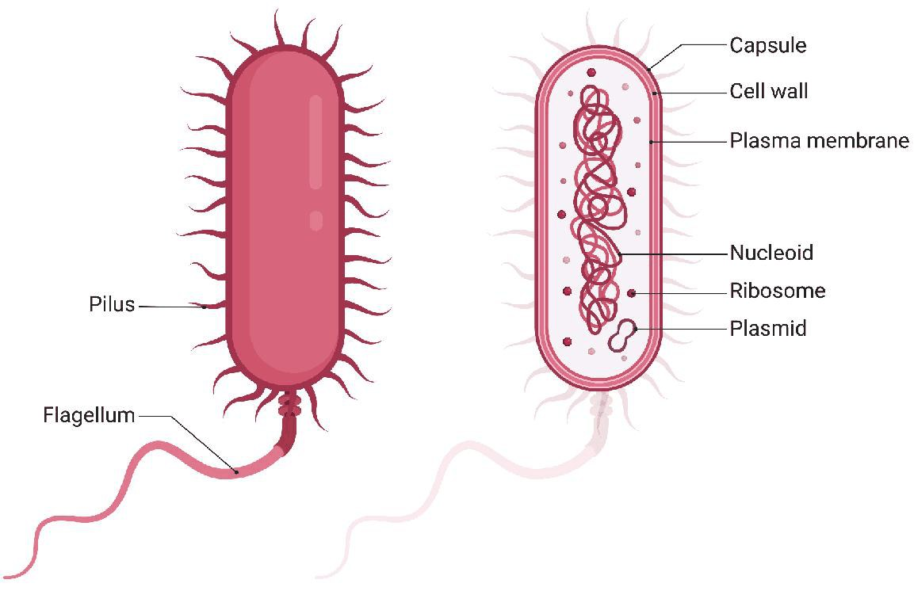
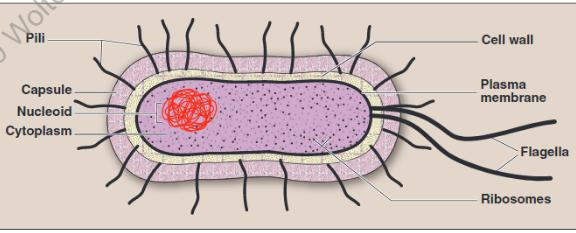
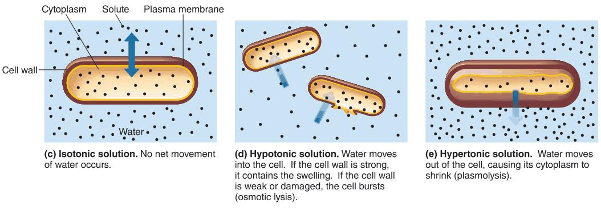
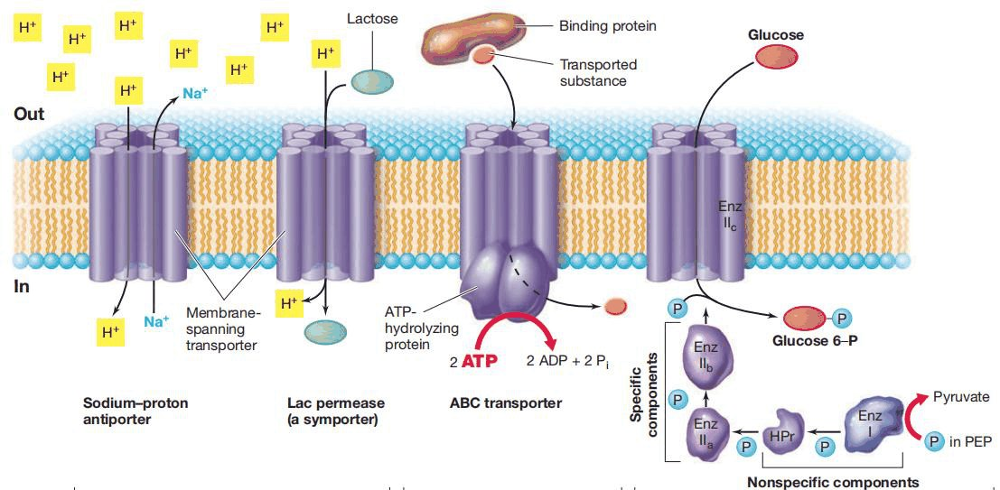
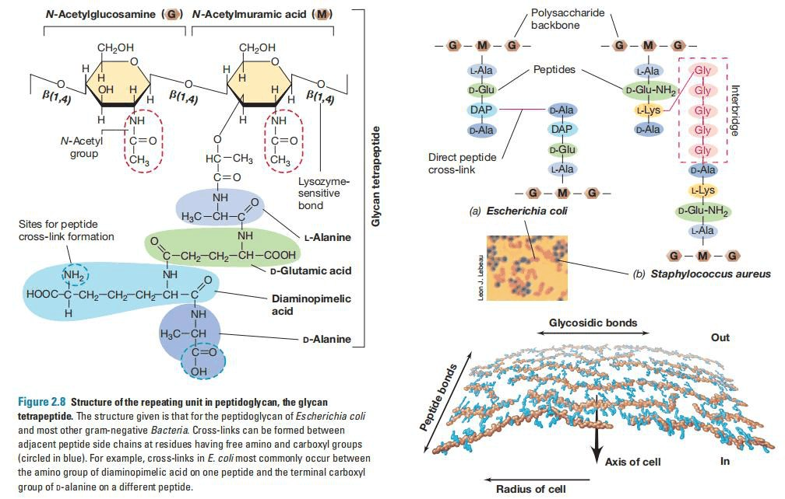

Everything that matters clinically about a bacterium is decided within about 50 nanometres of its surface. The envelope determines how it stains, therefore how it is classified; what toxins it releases when it dies; which antibiotics can reach and destroy it; and what the immune system sees. If you understand one thing in this course completely, make it this Part.هر آنچه از نظر بالینی دربارهٔ یک باکتری اهمیت دارد، در حدود ۵۰ نانومتری سطح آن تعیین میشود. پوشش سلولی مشخص میکند باکتری چگونه رنگ میگیرد و در نتیجه چگونه طبقهبندی میشود؛ هنگام مرگ چه سمومی آزاد میکند؛ کدام آنتیبیوتیکها میتوانند به آن برسند و نابودش کنند؛ و سیستم ایمنی چه میبیند. اگر قرار است فقط یک چیز را در این درس کامل بفهمید، همین بخش باشد.
By the end of this Part you should be able toدر پایان این بخش باید بتوانید
Draw and label the Gram-positive and Gram-negative envelopes from memory.پوشش گرممثبت و گرممنفی را از حفظ رسم و برچسبگذاری کنید.
Explain the Gram stain mechanistically — why each of the four reagents does what it does.رنگآمیزی گرم را بهصورت مکانیستیک توضیح دهید — اینکه چرا هر یک از چهار معرف، کاری را که میکند انجام میدهد.
Describe peptidoglycan synthesis and name the drugs that block each step.ساخت پپتیدوگلیکان را شرح دهید و داروهایی را که هر گام را مسدود میکنند نام ببرید.
Trace LPS from a dying Gram-negative cell to refractory septic shock.مسیر LPS را از یک سلول گرممنفی در حال مرگ تا شوک سپتیک مقاوم دنبال کنید.
Explain why Mycobacterium and Mycoplasma break the Gram system, and what to do instead.توضیح دهید چرا مایکوباکتریوم و مایکوپلاسما نظام گرم را میشکنند و بهجای آن چه باید کرد.
3.1How We Tell Bacteria Apartچگونه باکتریها را از هم تشخیص میدهیم
The lecture opens with the only question that matters at the bedside: "How do I know what bacterium makes my patient ill?" Everything in this Part and the next is an answer to it.درس با تنها پرسشی آغاز میشود که بر بالین اهمیت دارد: «از کجا بدانم کدام باکتری بیمارم را بیمار کرده است؟» هر چه در این بخش و بخش بعد میآید، پاسخی به همین پرسش است.
Bacterial species are differentiated by four criteria, and they are deliberately listed in order of how quickly they give an answer:گونههای باکتریایی با چهار معیار از هم تفکیک میشوند، و این معیارها عمداً بهترتیب سرعت پاسخدهی فهرست شدهاند:
Morphology — shape, size and arrangement. Minutes, from a stained smear.ریختشناسی — شکل، اندازه و آرایش. در عرض چند دقیقه، از یک گسترش رنگآمیزیشده.
Composition — the cell envelope and the other structures. This is what the Gram stain actually reads, and it is the subject of the rest of Parts 3 and 4.ترکیب — پوشش سلولی و سایر ساختارها. این همان چیزی است که رنگ گرم واقعاً میخواند، و موضوع بقیهٔ بخشهای ۳ و ۴ است.
Metabolism and growth characteristics — what it eats, what it needs, what it makes. Hours to days, in culture.متابولیسم و ویژگیهای رشد — چه میخورد، به چه نیاز دارد، چه میسازد. ساعتها تا روزها، در کشت.
Genetics — sequencing and molecular methods. Definitive, and increasingly fast.ژنتیک — توالییابی و روشهای مولکولی. قطعی، و بهطور فزاینده سریع.
High-Yieldنکتهٔ کلیدی
This session deals with criteria 1 and 2 — morphology and composition. Criteria 3 and 4 (growth, metabolism, genetics) are the next session. That division is not arbitrary: morphology and composition are what you can have in the first hour, which is exactly when empirical therapy must be chosen.این جلسه به معیارهای ۱ و ۲ میپردازد — ریختشناسی و ترکیب. معیارهای ۳ و ۴ (رشد، متابولیسم، ژنتیک) موضوع جلسهٔ بعدند. این تقسیمبندی دلبخواه نیست: ریختشناسی و ترکیب چیزی است که در ساعت نخست در دست دارید، و دقیقاً همانوقت است که باید درمان تجربی را انتخاب کنید.
The map of the cell — basic versus specific structuresنقشهٔ سلول — ساختارهای پایه در برابر اختصاصی

Fig 3.1 The structural map of a bacterial cell. Everything in Parts 3 and 4 is one label on this diagram. Learn the picture first and the details will have somewhere to attach.نقشهٔ ساختاری سلول باکتری. هر چه در بخشهای ۳ و ۴ میآید، یکی از برچسبهای همین شکل است. اول تصویر را یاد بگیرید تا جزئیات جایی برای چسبیدن داشته باشند.
The lecturer divides bacterial structures into two classes, and returns to this slide before every new structure. Which class a structure belongs to is itself an exam question, because it is the same as asking whether the structure is essential:مدرس ساختارهای باکتری را به دو دسته تقسیم میکند و پیش از هر ساختار جدید به همین اسلاید بازمیگردد. اینکه یک ساختار به کدام دسته تعلق دارد، خودش یک سؤال امتحانی است، چون همارز این پرسش است که آیا آن ساختار ضروری است:
Table 3.1 Basic versus specific structuresجدول ۳.۱ — ساختارهای پایه در برابر اختصاصی
Classدسته
Structuresساختارها
What the classification meansمعنای این دستهبندی
Basic — present in essentially every bacteriumپایه — تقریباً در هر باکتری
Remove any one and the cell dies. This is also why they make the best antibiotic targets — the drug cannot be evaded by simply discarding the structure.هر یک را بردارید، سلول میمیرد. به همین دلیل بهترین هدفهای آنتیبیوتیکی نیز هستند — دارو را نمیتوان صرفاً با دور انداختن ساختار دور زد.
Specific — present in some species onlyاختصاصی — فقط در برخی گونهها
Not essential for viability — but this is where most virulence factors and most transferable resistance live. Optional for the cell, decisive for the patient.برای بقا ضروری نیستند — اما بیشتر عوامل حدت و بیشتر مقاومت قابلانتقال همینجا هستند. برای سلول اختیاری، برای بیمار تعیینکننده.
Exam Trapدام امتحانی
"Not essential for viability" is not the same as "not important". A capsule-less S. pneumoniae grows perfectly well on a plate and is avirulent in a patient. The structures that a bacterium can live without are precisely the ones that let it live in you.«برای بقا ضروری نیست» با «مهم نیست» یکی نیست. پنوموکوکِ بدون کپسول روی پلیت بهخوبی رشد میکند و در بیمار بیحدت است. ساختارهایی که باکتری میتواند بدونشان زندگی کند، دقیقاً همانهایی هستند که به او اجازه میدهند درون شما زندگی کند.
3.2Prokaryote versus Eukaryoteپروکاریوت در برابر یوکاریوت

Fig 3.2 The bacterial cell. Note what is present — cell wall, plasma membrane, nucleoid, ribosomes, cytoplasm — and, just as importantly, what is absent: no nuclear membrane, no mitochondria, no endoplasmic reticulum, no Golgi, no lysosomes.سلول باکتری. به آنچه هست توجه کنید — دیوارهٔ سلولی، غشای پلاسمایی، نوکلئوئید، ریبوزوم، سیتوپلاسم — و به همان اندازه به آنچه نیست: بدون غشای هسته، بدون میتوکندری، بدون شبکهٔ آندوپلاسمی، بدون گلژی، بدون لیزوزوم.
Definitionتعریف
A prokaryote (pro = before, karyon = nucleus) is a cell whose genetic material is not enclosed in a nuclear membrane and which lacks membrane-bound organelles. All bacteria are prokaryotes; all bacteria of medical importance are eubacteria.پروکاریوت (pro = پیش از، karyon = هسته) سلولی است که مادهٔ ژنتیکی آن در غشای هسته محصور نیست و اندامک غشادار ندارد. تمام باکتریها پروکاریوتاند؛ و تمام باکتریهای مهم پزشکی، یوباکتری هستند.
Table 3.2 Prokaryotic versus eukaryotic cellsجدول ۳.۲ — سلول پروکاریوت در برابر یوکاریوت
No meiosis — DNA fragments transferred instead (conjugation, transformation, transduction)بدون میوز — بهجای آن قطعات DNA منتقل میشود (کونژوگاسیون، ترانسفورماسیون، ترانسداکشن)
Involves meiosisشامل میوز
Plasmidsپلاسمید
Commonشایع
Rareنادر
High-Yield — "which is NOT found in a bacterial cell?"نکتهٔ کلیدی — «کدام در سلول باکتری یافت نمیشود؟»
This exact MCQ appears in the Lecture 2 question set. Bacteria do have ribosomes, DNA and cytoplasm; they do not have mitochondria, Golgi, endoplasmic reticulum, lysosomes or a nuclear membrane. The underlying principle is simple: a prokaryote has no internal membranes, so any structure defined by a membrane is absent — and the cytoplasmic membrane must therefore do all their jobs, including respiration.دقیقاً همین سؤال در مجموعه سؤالات درس ۲ آمده است. باکتریها ریبوزوم، DNA و سیتوپلاسم دارند؛ اما میتوکندری، گلژی، شبکهٔ آندوپلاسمی، لیزوزوم و غشای هسته ندارند. اصل زیربنایی ساده است: پروکاریوت غشای داخلی ندارد، پس هر ساختاری که با غشا تعریف شود غایب است — و بنابراین غشای سیتوپلاسمی باید همهٔ کارهای آنها از جمله تنفس سلولی را انجام دهد.
3.3Size, Shape and Arrangementاندازه، شکل و آرایش
Most medically important bacteria are 0.2–2 µm wide and 1–10 µm long. They are described by three independent features, and a complete morphological description gives all three: shape, arrangement, and Gram reaction. "Gram-positive cocci in clusters" is a usable preliminary diagnosis; "cocci" alone is not.بیشتر باکتریهای مهم پزشکی ۰.۲ تا ۲ میکرومتر پهنا و ۱ تا ۱۰ میکرومتر طول دارند. آنها با سه ویژگی مستقل توصیف میشوند و یک توصیف مورفولوژیک کامل هر سه را میدهد: شکل، آرایش و واکنش گرم. «کوکسی گرممثبت بهصورت خوشهای» یک تشخیص اولیهٔ قابلاستفاده است؛ «کوکسی» بهتنهایی نه.
Bacillus — rod-shaped. Note the trap: lower-case bacillus is a shape; capitalised italic Bacillus is a specific genus. Rods divide only across their short axis, which is why you never see a tetrad or a cluster of rods — only single rods, pairs (diplobacilli), end-to-end chains (streptobacilli) and side-by-side palisades.باسیل — میلهای. به این دام توجه کنید: باسیل با حرف کوچک یک شکل است؛ Bacillus با حرف بزرگ و ایتالیک یک جنس خاص. میلهها فقط در محور کوتاه خود تقسیم میشوند؛ به همین دلیل هرگز تتراد یا خوشهٔ باسیل نمیبینید — فقط میلهٔ منفرد، جفت (دیپلوباسیل)، زنجیرهٔ سربهسر (استرپتوباسیل) و پالیساد کنار هم.
Coccobacillus — a short, plump rod that can be mistaken for a coccus (e.g. Haemophilus influenzaeGram −).کوکوباسیل — میلهٔ کوتاه و چاق که ممکن است با کوکسی اشتباه شود (مثل Haemophilus influenzae).
Vibrio — comma-shaped, a single curve (Vibrio choleraeGram −).ویبریو — کاماشکل با یک خمیدگی (Vibrio cholerae).
Spirillum — rigid corkscrew, moves with external flagella.اسپیریلوم — مارپیچ سخت که با تاژک خارجی حرکت میکند.
Arrangement — and why it happensآرایش — و چرا رخ میدهد
Arrangement is determined entirely by the plane of division and whether daughter cells separate. This is not a detail to memorise separately — it falls straight out of how the cell divides:آرایش کاملاً با صفحهٔ تقسیم و جداشدن یا نشدن سلولهای دختر تعیین میشود. این جزئیاتی نیست که جداگانه حفظ شود — مستقیماً از نحوهٔ تقسیم سلول نتیجه میگیرد:
Table 3.3 Arrangement follows the plane of divisionجدول ۳.۳ — آرایش، تابع صفحهٔ تقسیم است
Arrangementآرایش
How it arisesچگونه ایجاد میشود
Classic organismمیکروارگانیسم شاخص
Diplococciدیپلوکوک
Division in one plane, cells remain in pairsتقسیم در یک صفحه، سلولها جفت میمانند
Spherical cells in chains = Streptococcus. Spherical cells in clusters = Staphylococcus. Both appear verbatim in the lecture MCQs. Remember the etymology and you can never confuse them: strepto- = twisted chain, staphylo- = bunch of grapes.سلولهای کروی در زنجیره = Streptococcus. سلولهای کروی در خوشه = Staphylococcus. هر دو عیناً در سؤالات درس آمدهاند. ریشهٔ واژه را به یاد داشته باشید تا هرگز اشتباه نکنید: استرپتو = زنجیرهٔ پیچیده، استافیلو = خوشهٔ انگور.
3.4The Cytoplasmic Membraneغشای سیتوپلاسمی
A standard phospholipid bilayer with embedded proteins, and — critically — no sterols, unlike every eukaryotic membrane. The sole exception is Mycoplasma, which incorporates cholesterol scavenged from the host.یک دولایهٔ فسفولیپیدی استاندارد با پروتئینهای نشاندهشده و — نکتهٔ حیاتی — بدون استرول، برخلاف هر غشای یوکاریوتی. تنها استثنا مایکوپلاسماست که کلسترولِ گرفتهشده از میزبان را در غشای خود جای میدهد.
Because a bacterium has no organelles, this single membrane must perform every membrane-dependent function:چون باکتری اندامک ندارد، همین یک غشا باید تمام عملکردهای وابسته به غشا را انجام دهد:
Selective permeability and transport — the real cell boundary (the wall is a rigid mesh, not a barrier to small molecules).نفوذپذیری انتخابی و انتقال — مرز واقعی سلول (دیواره یک شبکهٔ صلب است، نه سدی در برابر مولکولهای کوچک).
Electron transport and oxidative phosphorylation — it does the mitochondrion's job.انتقال الکترون و فسفوریلاسیون اکسیداتیو — کار میتوکندری را انجام میدهد.
Secretion of enzymes and toxins.ترشح آنزیمها و توکسینها.
Synthesis of cell wall and membrane precursors.ساخت پیشسازهای دیواره و غشا.
Anchorage of DNA during replication and of flagellar motors.لنگرگاهDNA هنگام همانندسازی و موتورهای تاژکی.
Osmosis — why the membrane needs the wallاسمز — چرا غشا به دیواره نیاز دارد

Fig 3.4 The membrane is semi-permeable, so water follows solute. Isotonic: no net movement. Hypotonic: water enters — a strong wall contains the swelling, a weak or damaged wall lets the cell burst (osmotic lysis). Hypertonic: water leaves and the cytoplasm shrinks (plasmolysis).غشا نیمهتراواست، پس آب بهدنبال املاح میرود. ایزوتونیک: جابهجایی خالصی رخ نمیدهد. هیپوتونیک: آب وارد میشود — دیوارهٔ محکم تورم را مهار میکند، دیوارهٔ ضعیف یا آسیبدیده اجازه میدهد سلول بترکد (لیز اسمزی). هیپرتونیک: آب خارج میشود و سیتوپلاسم جمع میشود (پلاسمولیز).
Bacterial cytoplasm is crowded with solute, so a bacterium in tissue fluid or in water is almost always in a hypotonic environment: water is permanently trying to enter. The membrane cannot resist that pressure — it is a fluid bilayer, not a rigid shell. The cell wall is what holds the cell together against it.سیتوپلاسم باکتری پر از املاح است، پس باکتری در مایع بافتی یا آب تقریباً همیشه در محیطی هیپوتونیک قرار دارد: آب دائماً میکوشد وارد شود. غشا نمیتواند در برابر این فشار مقاومت کند — یک دولایهٔ سیال است، نه پوستهای صلب. دیوارهٔ سلولی همان چیزی است که سلول را در برابر آن نگه میدارد.
High-Yieldنکتهٔ کلیدی
This single fact is the hinge of the whole antibiotic story. Penicillin does not kill bacteria. Osmosis does. The drug only stops the wall being repaired; the water pressure that was always there then does the killing. Every downstream fact follows — why β-lactams are bactericidal, why they work only on growing cells, and why an organism with no wall (Mycoplasma) is untouched.همین یک واقعیت، لولای تمام داستان آنتیبیوتیک است. پنیسیلین باکتری را نمیکشد. اسمز میکشد. دارو فقط ترمیم دیواره را متوقف میکند؛ سپس فشار آبی که همیشه آنجا بوده، کشتن را انجام میدهد. هر نکتهٔ بعدی از همین نتیجه میشود — چرا بتالاکتامها باکتریکشاند، چرا فقط روی سلولهای در حال رشد اثر دارند، و چرا موجودی بدون دیواره (مایکوپلاسما) دستنخورده میماند.

Fig 3.5 Membrane transport systems. A sodium–proton antiporter and the lac permease symporter run on the proton gradient; the ABC transporter spends ATP directly; the phosphotransferase system phosphorylates its substrate as it imports it. All four exist because the membrane must do the work that organelles do in a eukaryote.سامانههای انتقال غشایی. آنتیپورتر سدیم–پروتون و سیمپورتر لاکپرمهآز با شیب پروتونی کار میکنند؛ ترانسپورتر ABC مستقیماً ATP مصرف میکند؛ سامانهٔ فسفوترانسفراز بستر خود را همزمان با ورود فسفریله میکند. هر چهار مورد وجود دارند چون غشا باید کاری را انجام دهد که در یوکاریوتها اندامکها میکنند.
Clinical Correlationارتباط بالینی
Drugs that attack the membrane are powerful but relatively toxic, precisely because bacterial and human membranes are broadly similar in construction. Polymyxins (colistin) act as cationic detergents on Gram-negative membranes and are reserved for multidrug-resistant infection because of nephrotoxicity and neurotoxicity. Daptomycin inserts into Gram-positive membranes and depolarises them — but it is inactivated by pulmonary surfactant, so it must never be used for pneumonia. That single fact is a favourite exam item, and it follows directly from the drug's mechanism.داروهایی که به غشا حمله میکنند قدرتمند اما نسبتاً سمیاند، دقیقاً به این دلیل که غشای باکتری و انسان از نظر ساختار تا حد زیادی شبیهاند. پلیمیکسینها (کلیستین) مانند دترجنت کاتیونی روی غشای گرممنفی عمل میکنند و بهدلیل سمیت کلیوی و عصبی برای عفونتهای مقاوم به چند دارو نگه داشته میشوند. داپتومایسین در غشای گرممثبت نفوذ و آن را دپلاریزه میکند — اما با سورفکتانت ریوی غیرفعال میشود، پس هرگز نباید برای پنومونی بهکار رود. همین یک نکته سؤال محبوب امتحانی است و مستقیماً از مکانیسم دارو نتیجه میشود.
3.5Peptidoglycan — Structure and Synthesisپپتیدوگلیکان — ساختار و ساخت
Definitionتعریف
Peptidoglycan (murein) is a single, bag-shaped, highly cross-linked macromolecule that surrounds the cytoplasmic membrane — one molecule, running to billions in molecular weight, enclosing the whole cell like a mesh string bag. It is made of glycan chains cross-linked by short peptides, is unique to bacteria, and is present in all eubacteria except Mycoplasma and Ureaplasma. Its rigidity is what decides the shape of the bacterium and what resists osmotic lysis.پپتیدوگلیکان (مورئین) یک ماکرومولکول واحد، کیسهایشکل و بهشدت متقاطع است که غشای سیتوپلاسمی را در بر میگیرد — یک مولکول، با وزن مولکولی در حد میلیاردها، که کل سلول را مانند یک کیسهٔ توری در بر میگیرد. از زنجیرههای گلیکانی متصلشده با پپتیدهای کوتاه ساخته شده، منحصر به باکتریهاست و در همهٔ یوباکتریها وجود دارد جز مایکوپلاسما و اورهآپلاسما. صلبیت آن است که شکل باکتری را تعیین میکند و در برابر لیز اسمزی مقاومت مینماید.

Fig 3.6 The repeating unit, at the chemical level. NAG–NAM joined by the β-1,4 bond that lysozyme cuts, with the tetrapeptide hanging off NAM. Note the two cross-linking styles the course contrasts: E. coli makes a direct bond from diaminopimelic acid to D-alanine, while S. aureus inserts a five-glycine interbridge. Same chemistry, different geometry — and it is why a wall can be thick or thin without changing its building blocks.واحد تکرارشونده، در سطح شیمیایی. NAG–NAM با پیوند بتا-۱و۴ که لیزوزیم آن را میبرد، و تتراپپتید آویزان از NAM. به دو سبک اتصال عرضی که درس مقایسه میکند توجه کنید: E. coli پیوند مستقیم از اسید دیآمینوپیملیک به D-آلانین میسازد، اما S. aureus یک پل پنجگلایسینی جای میدهد. شیمی یکسان، هندسهٔ متفاوت — و به همین دلیل یک دیواره میتواند ضخیم یا نازک باشد بیآنکه اجزای سازندهاش فرق کند.
What the cell wall is forدیوارهٔ سلولی به چه کار میآید
The lecture gives four functions. They are worth learning as a set, because three of the four are lost the moment a β-lactam works, and the fourth explains why the drug is bactericidal rather than merely inhibitory:درس چهار کارکرد را نام میبرد. ارزش دارد که بهصورت یک مجموعه یاد گرفته شوند، چون سه تا از چهارتا در همان لحظهای که بتالاکتام اثر میکند از دست میروند، و چهارمی توضیح میدهد چرا دارو باکتریکش است نه صرفاً مهارکننده:
Maintains the characteristic shape. A coccus is a coccus because its wall is built that way — strip the wall and every bacterium becomes a sphere.حفظ شکل مشخصهٔ باکتری. کوکسی کوکسی است چون دیوارهاش چنین ساخته شده — دیواره را بردارید، هر باکتری کروی میشود.
Provides resistance to osmotic change. The point of §3.4 — it is the pressure vessel.مقاومت در برابر تغییرات اسمزی. نکتهٔ بخش ۳.۴ — دیواره همان مخزن تحت فشار است.
Anchors surface appendages such as flagella and pili. No wall, no motility and no adhesion.لنگرگاه زائدههای سطحی مانند تاژک و پیلوس. بدون دیواره، نه حرکتی هست نه چسبندگی.
Assists in cell division. The septum that separates two daughter cells is new wall. This is why a cell that cannot build wall also cannot divide — and why β-lactams only harm cells that are actively growing.کمک به تقسیم سلولی. سپتومی که دو سلول دختر را جدا میکند، دیوارهٔ نوساخته است. به همین دلیل سلولی که نمیتواند دیواره بسازد نمیتواند تقسیم هم بشود — و به همین دلیل بتالاکتامها فقط به سلولهای در حال رشد فعال آسیب میزنند.
Fig 3.7 Peptidoglycan architecture. Alternating N-acetylglucosamine (NAG) and N-acetylmuramic acid (NAM) form glycan chains joined by β-1,4 glycosidic bonds. A short peptide hangs from every NAM, and adjacent peptides are cross-linked (X) into a single continuous mesh. Two attack points follow directly from this picture: lysozyme hydrolyses the β-1,4 backbone, and β-lactam antibiotics block the enzyme that forms the cross-link.معماری پپتیدوگلیکان. N-استیلگلوکزآمین (NAG) و N-استیلمورامیک اسید (NAM) بهطور متناوب زنجیرههای گلیکانی میسازند که با پیوندهای گلیکوزیدی بتا-۱,۴ به هم متصلاند. از هر NAM یک پپتید کوتاه آویزان است و پپتیدهای مجاور به هم اتصال عرضی (X) مییابند و یک شبکهٔ پیوستهٔ واحد میسازند. دو نقطهٔ حمله مستقیماً از همین تصویر نتیجه میشود: لیزوزیم ستون بتا-۱,۴ را هیدرولیز میکند و آنتیبیوتیکهای بتالاکتام آنزیم سازندهٔ اتصال عرضی را مسدود مینمایند.
Mechanism — peptidoglycan synthesis and where each drug strikesمکانیسم — ساخت پپتیدوگلیکان و نقطهٔ اثر هر دارو
Cytoplasm. NAM and NAG precursors are made, and a pentapeptide ending in D-alanyl-D-alanine is attached to NAM.The terminal D-Ala-D-Ala is the handle everything later grabs. Vancomycin binds this dipeptide directly, and the fact that bacteria use the D-isomer — which human enzymes cannot make or cleave — is why the pathway is selectively attackable. Fosfomycin and cycloserine block precursor formation here.سیتوپلاسم. پیشسازهای NAM و NAG ساخته میشوند و یک پنتاپپتید با انتهای D-آلانیل-D-آلانین به NAM متصل میگردد.انتهای D-آلا-D-آلا دستگیرهای است که همهچیز بعداً آن را میگیرد. ونکومایسین مستقیماً به همین دیپپتید متصل میشود، و اینکه باکتریها از ایزومر D استفاده میکنند — که آنزیمهای انسانی نه میسازند و نه میشکنند — دلیل قابلحمله بودن انتخابی این مسیر است. فسفومایسین و سیکلوسرین اینجا ساخت پیشسازها را مسدود میکنند.
Membrane. The precursor is handed to bactoprenol, a lipid carrier, which ferries it across the hydrophobic membrane to the outside.A large hydrophilic sugar-peptide cannot cross a lipid bilayer unaided; it needs a lipid escort. Bacitracin blocks the recycling of bactoprenol, stalling the conveyor belt.غشا. پیشساز به باکتوپرنول، یک حامل لیپیدی، سپرده میشود که آن را از عرض غشای آبگریز به بیرون میبرد.یک قند-پپتید بزرگ و آبدوست نمیتواند بدون کمک از دولایهٔ لیپیدی عبور کند؛ به همراهی لیپیدی نیاز دارد. باسیتراسین بازیافت باکتوپرنول را مسدود میکند و نوار نقاله را متوقف میسازد.
Outside the membrane — transglycosylation. The new disaccharide unit is added to a growing glycan chain via a β-1,4 bond.This lengthens the chains but does not yet strengthen the wall; long parallel strands without cross-links are like uncemented bricks.خارج از غشا — ترانسگلیکوزیلاسیون. واحد دیساکاریدی جدید با پیوند بتا-۱,۴ به زنجیرهٔ گلیکانی در حال رشد افزوده میشود.این کار زنجیرهها را بلندتر میکند اما هنوز دیواره را محکم نمیسازد؛ رشتههای موازی بلند بدون اتصال عرضی مثل آجرهای بدون ملاتاند.
Transpeptidation — the cross-link.Transpeptidase enzymes, also called penicillin-binding proteins (PBPs), cleave the terminal D-Ala and use the energy released to form a peptide bond to the neighbouring chain.This converts thousands of separate strands into one covalently continuous molecule encasing the whole cell. It is the step that makes the wall strong — and it is the step β-lactams block.ترانسپپتیداسیون — اتصال عرضی. آنزیمهای ترانسپپتیداز که پروتئینهای متصلشونده به پنیسیلین (PBP) نیز نامیده میشوند، D-آلانین انتهایی را جدا کرده و از انرژی آزادشده برای ساخت پیوند پپتیدی با زنجیرهٔ مجاور استفاده میکنند.این کار هزاران رشتهٔ جدا را به یک مولکول پیوستهٔ کووالان تبدیل میکند که تمام سلول را دربرمیگیرد. همین گام است که دیواره را مستحکم میسازد — و همین گامی است که بتالاکتامها مسدودش میکنند.
β-lactams bind the PBP irreversibly. Penicillins, cephalosporins, carbapenems and monobactams all carry a β-lactam ring that structurally mimics D-Ala-D-Ala, so the transpeptidase binds the drug instead of its true substrate and is permanently acylated.Molecular mimicry is the whole trick — the enzyme cannot tell the difference until it is too late.بتالاکتامها بهصورت برگشتناپذیر به PBP متصل میشوند. پنیسیلینها، سفالوسپورینها، کارباپنمها و مونوباکتامها همگی حلقهٔ بتالاکتامی دارند که از نظر ساختاری D-آلا-D-آلا را تقلید میکند، پس ترانسپپتیداز بهجای سوبسترای واقعی به دارو متصل و برای همیشه آسیله میشود.تمام ترفند، تقلید مولکولی است — آنزیم تا وقتی دیر نشده تفاوت را تشخیص نمیدهد.
The cell lyses. Cross-linking stops, but autolysins — the enzymes that normally cut the wall to allow growth — keep working. The wall weakens, and because bacterial cytoplasm is strongly hypertonic relative to its surroundings, water rushes in and the cell bursts.This explains three exam facts at once: β-lactams are bactericidal not bacteriostatic; they only work on actively growing cells (a dormant cell is not building wall, so there is nothing to block); and they are useless against organisms with no peptidoglycan, such as Mycoplasma.سلول لیز میشود. اتصال عرضی متوقف میشود، اما اتولیزینها — آنزیمهایی که بهطور طبیعی دیواره را برای امکان رشد میبرند — به کار ادامه میدهند. دیواره ضعیف میشود و چون سیتوپلاسم باکتری نسبت به محیط اطراف بهشدت هیپرتونیک است، آب به داخل هجوم میآورد و سلول میترکد.این سه نکتهٔ امتحانی را یکجا توضیح میدهد: بتالاکتامها باکتریکشاند نه باکتریایستا؛ فقط روی سلولهای در حال رشد فعال اثر دارند (سلول خاموش دیواره نمیسازد، پس چیزی برای مسدودکردن نیست)؛ و علیه میکروارگانیسمهای بدون پپتیدوگلیکان بیفایدهاند، مانند مایکوپلاسما.
A single, covalently continuous mesh that resists an internal osmotic pressure of up to 25 atmospheres in Gram-positives. Remove it and the cell dies by osmotic lysis within minutes.یک شبکهٔ واحد و پیوستهٔ کووالان که در گرممثبتها تا ۲۵ اتمسفر فشار اسمزی داخلی را تحمل میکند. آن را بردارید و سلول ظرف چند دقیقه با لیز اسمزی میمیرد.
Lab Pearl — lysozymeنکتهٔ آزمایشگاهی — لیزوزیم
Lysozyme, present in tears, saliva, mucus and egg white, hydrolyses the β-1,4 bond between NAG and NAM. It is far more effective against Gram-positives, whose peptidoglycan is exposed at the surface, than against Gram-negatives, whose outer membrane shields the thin peptidoglycan beneath. This is one of the reasons the conjunctiva and oral mucosa — bathed in lysozyme — resist Gram-positive colonisation so well. Discovered, incidentally, by Alexander Fleming in 1922, six years before penicillin.لیزوزیم که در اشک، بزاق، موکوس و سفیدهٔ تخممرغ وجود دارد، پیوند بتا-۱,۴ بین NAG و NAM را هیدرولیز میکند. اثر آن بر گرممثبتها که پپتیدوگلیکانشان در سطح در معرض است بسیار بیشتر از گرممنفیهاست که غشای خارجی، پپتیدوگلیکان نازک زیرین را محافظت میکند. این یکی از دلایلی است که ملتحمه و مخاط دهان — که در لیزوزیم غوطهورند — در برابر کلونیزاسیون گرممثبتها اینقدر مقاوماند. ضمناً این آنزیم را الکساندر فلمینگ در ۱۹۲۲، شش سال پیش از پنیسیلین، کشف کرد.